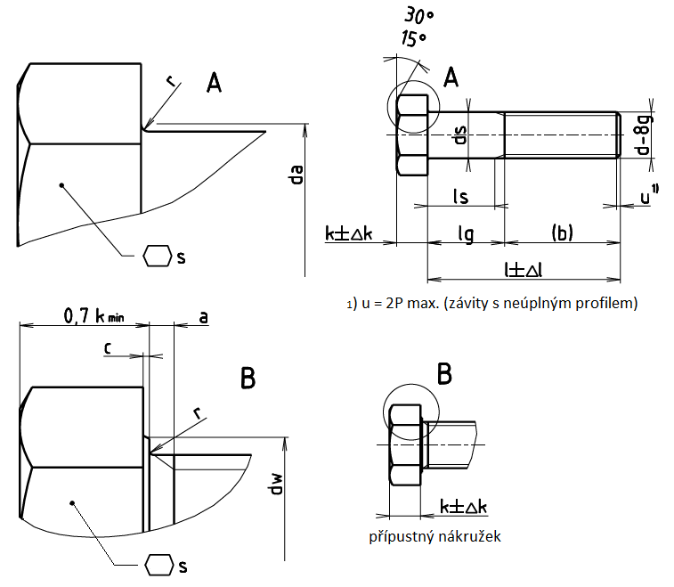

Příklad označení šroubu s metrickým závitem M12 a s délkou l=80mm, pevnostní třídy 4.6:
ŠROUB SE ŠESTIHRANNOU HLAVOU ISO 4016 – M12×80 – 4.6
| d1) | M5 | M6 | M8 | M10 | M12 | (M14) | M16 | (M18) | M20 | (M22) | M24 | (M27) |
|---|---|---|---|---|---|---|---|---|---|---|---|---|
| P | 0,8 | 1 | 1,25 | 1,5 | 1,75 | 2 | 2 | 2,5 | 2,5 | 2,5 | 3 | 3 |
| b2) | 16 | 18 | 22 | 26 | 30 | 34 | 38 | 42 | 46 | 50 | 54 | 60 |
| b3) | - | - | - | - | - | 40 | 44 | 48 | 52 | 56 | 60 | 66 |
| b4) | - | - | - | - | - | - | - | - | - | 69 | 73 | 79 |
| cmax. | 0,5 | 0,5 | 0,5 | 0,6 | 0,6 | 0,6 | 0,6 | 0,8 | 0,8 | 0,8 | 0,8 | 0,8 |
| da max. | 6 | 7,2 | 10,2 | 12,2 | 14,7 | 16,7 | 18,7 | 21,2 | 24,4 | 26,4 | 28,4 | 32,4 |
| ds max. | 5,48 | 6,48 | 8,58 | 10,58 | 12,2 | 14,7 | 16,7 | 18,7 | 20,84 | 22,84 | 24,84 | 27,84 |
| ds min. | 4,52 | 5,52 | 7,42 | 9,42 | 11,3 | 13,3 | 15,3 | 17,3 | 19,6 | 21,16 | 23,16 | 25,16 |
| dw min. | 6,74 | 8,74 | 11,47 | 14,47 | 16,47 | 19,15 | 22 | 24,85 | 27,7 | 31,35 | 33,25 | 38 |
| emin. | 8,63 | 1,89 | 14,2 | 17,59 | 19,85 | 22,87 | 26,17 | 29,56 | 32,95 | 37,29 | 39,55 | 45,2 |
| k | 3,5 | 4,0 | 5,3 | 6,4 | 7,5 | 8,8 | 10 | 11,5 | 12,5 | 14 | 15 | 17 |
| Δk | 0,375 | 0,375 | 0,375 | 0,45 | 0,45 | 0,45 | 0,75 | 0,9 | 0,9 | 0,9 | 0,9 | 0,9 |
| rmin. | 0,2 | 0,25 | 0,4 | 0,4 | 0,6 | 0,6 | 0,6 | 0,6 | 0,8 | 0,8 | 0,8 | 1 |
| smax. | 8 | 10 | 13 | 16 | 18 | 21 | 24 | 27 | 30 | 34 | 36 | 41 |
| smin. | 7,64 | 9,64 | 12,57 | 15,57 | 17,57 | 20,16 | 23,16 | 26,16 | 29,16 | 33 | 35 | 40 |
| l | Δl | ls lg5) 6) | M5 | M6 | M8 | M10 | M12 | (M14) | M16 | (M18) | M20 | (M22) | M24 | (M27) | ||
|---|---|---|---|---|---|---|---|---|---|---|---|---|---|---|---|---|
| 25 | ±1,05 | ls min. lg max. |
5 9 |
|||||||||||||
| 30 | ±1,05 | ls min. lg max. |
10 14 |
7 12 |
||||||||||||
| 35 | ±1,25 | ls min. lg max. |
15 19 |
7 12 |
Pro délky ležící nad lomenou čarou se používají šrouby podle ISO 4018. | |||||||||||
| 40 | ±1,25 | ls min. lg max. |
20 24 |
17 22 |
11,75 18 |
|||||||||||
| 45 | ±1,25 | ls min. lg max. |
25 29 |
22 27 |
16,75 23 |
11,5 19 |
||||||||||
| 50 | ±1,25 | ls min. lg max. |
30 34 |
27 32 |
21,75 28 |
16,5 24 |
||||||||||
| 55 | ±1,5 | ls min. lg max. |
32 37 |
26,75 33 |
21,5 29 |
16,25 25 |
||||||||||
| 60 | ±1,5 | ls min. lg max. |
37 42 |
31,75 38 |
26,5 34 |
21,25 30 |
16 26 |
|||||||||
| 65 | ±1,5 | ls min. lg max. |
36,75 43 |
31,5 39 |
26,25 35 |
21 31 |
17 27 |
|||||||||
| 70 | ±1,5 | ls min. lg max. |
41,75 48 |
36,5 44 |
31,25 40 |
26 36 |
22 32 |
|||||||||
| 80 | ±1,5 | ls min. lg max. |
51,75 58 |
46,5 54 |
41,25 50 |
36 46 |
32 42 |
25,5 38 |
21,5 34 |
|||||||
| 90 | ±1,75 | ls min. lg max. |
56,5 64 |
51,25 60 |
46 56 |
42 52 |
35,5 48 |
31,5 44 |
27,5 40 |
|||||||
| 100 | ±1,75 | ls min. lg max. |
66,5 74 |
61,25 70 |
56 66 |
52 62 |
45,5 58 |
41,5 54 |
37,5 50 |
31 46 |
||||||
| 110 | ±1,75 | ls min. lg max. |
71,25 80 |
66 76 |
62 72 |
55,5 68 |
51,5 64 |
47,5 60 |
41 56 |
35 50 |
||||||
| 120 | ±1,75 | ls min. lg max. |
81,25 90 |
76 86 |
72 82 |
65,5 78 |
61,5 74 |
57,5 70 |
51 66 |
45 60 |
||||||
| 130 | ±2 | ls min. lg max. |
80 90 |
76 86 |
69,5 82 |
65,5 78 |
61,5 74 |
55 70 |
49 64 |
|||||||
| 140 | ±2 | ls min. lg max. |
90 100 |
86 96 |
79,5 92 |
75,5 88 |
71,5 84 |
65 80 |
59 74 |
|||||||
| 150 | ±2 | ls min. lg max. |
96 106 |
89,5 102 |
85,5 98 |
81,5 94 |
75 90 |
69 84 |
||||||||
| 160 | ±4 | ls min. lg max. |
106 116 |
99,5 112 |
95,5 108 |
91,5 104 |
85 100 |
79 94 |
||||||||
| 180 | ±4 | ls min. lg max. |
119,5 132 |
115,5 128 |
111,5 124 |
105 120 |
99 114 |
|||||||||
| 200 | ±4,6 | ls min. lg max. |
135,5 148 |
131,5 144 |
125 140 |
119 134 |
||||||||||
| 220 | ±4,6 | ls min. lg max. |
138,5 151 |
132 147 |
126 141 |
|||||||||||
| 240 | ±4,6 | ls min. lg max. |
152 167 |
146 161 |
||||||||||||
| 260 | ±4,6 | ls min. lg max. |
166 181 |
|||||||||||||